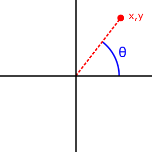

The Math.atan2() function returns the angle in the plane
(in radians) between the
positive x-axis and the ray from (0,0) to the point (x,y), for
Math.atan2(y,x).
Math.atan2(y, x)
yxThe angle in radians (in ) between the positive x-axis and the ray from (0,0) to the point (x,y).
The Math.atan2() method returns a numeric value between -π and π
representing the angle theta of an
(x, y) point. This is the counterclockwise angle, measured in radians,
between the positive X axis, and
the point (x, y). Note that the arguments to this function pass the
y-coordinate first and the
x-coordinate second.

Math.atan2() is passed separate x and y
arguments, and
Math.atan() is passed the ratio of those two arguments.
Because atan2() is a static method of Math, you always use it
as Math.atan2(),
rather than as a method of a Math object you created (Math is
not a constructor).
Math.atan2(90, 15); // 1.4056476493802699 Math.atan2(15, 90); // 0.16514867741462683 Math.atan2(±0, -0); // ±PI. Math.atan2(±0, +0); // ±0. Math.atan2(±0, -x); // ±PI for x > 0. Math.atan2(±0, x); // ±0 for x > 0. Math.atan2(-y, ±0); // -PI/2 for y > 0. Math.atan2(y, ±0); // PI/2 for y > 0. Math.atan2(±y, -Infinity); // ±PI for finite y > 0. Math.atan2(±y, +Infinity); // ±0 for finite y > 0. Math.atan2(±Infinity, x); // ±PI/2 for finite x. Math.atan2(±Infinity, -Infinity); // ±3*PI/4. Math.atan2(±Infinity, +Infinity); // ±PI/4.
{{Compat}}